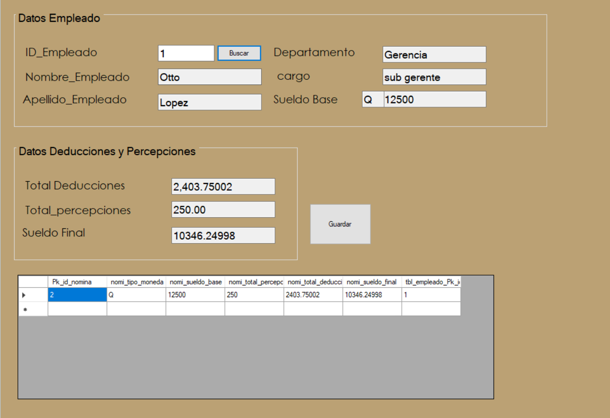
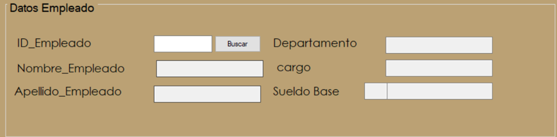
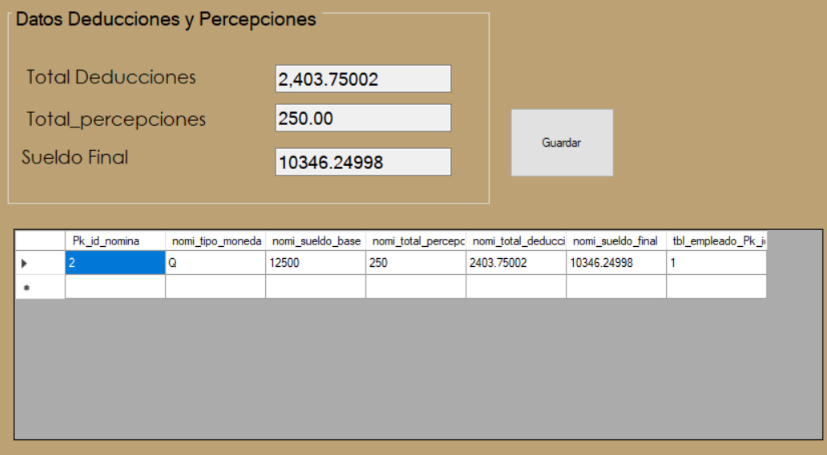

El proceso de nominas Involucra el cálculo y la distribución de los salarios y prestaciones de los empleados.
En este apartado se puede buscar al empleado que se le va a aplicar la nomina se obtiene sus datos personales como el departamento al que pertenece y su salario, de igual manera al buscar al empleado de una vez se obtiene el total de deducciones y percepciones pertenecientes al empleado buscado obteniendo su sueldo final.
En este apartado se podran observar las deducciones y percepciones del empleado buscado asi como el valor final de su sueldo ya calculado, lo unico que resta es darle al boton de "Guardar" para guardar la nomina.
